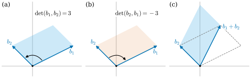
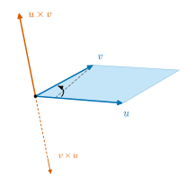

1.6 Determinants, Orientation, and the Cross Product
Goals
- multilinear와 alternating의 뜻을 알고, determinant를 “정규화된 alternating multilinear function”으로 특징짓는 정리를 증명의 전체 구조와 함께 이해한다.
- \(\det(AB) = \det A\det B\), \(\det A \neq 0 \iff A\) invertible, \(\det A^{\mathsf{T}} = \det A\)를 증명할 수 있다.
- vector space의 orientation을 change-of-basis matrix의 determinant 부호로 정의하고, orientation이 정확히 두 개임을 보일 수 있다.
- \(\R^3\)의 cross product를 determinant와 inner product로 정의하고, 수직성·넓이·오른손 orientation을 증명하며, wedge product와 구별할 수 있다.
Prerequisites
- Theorem 1.1.18, Corollary 1.1.21
- Theorem 1.2.16 (composition and matrix multiplication), Corollary 1.2.17
- Definition 1.3.4 (dual basis)
- Definition 1.4.1 (change-of-basis matrix), Proposition 1.4.4, Theorem 1.4.12
- Theorem 1.5.5 (Cauchy–Schwarz), Proposition 1.5.9, Proposition 1.5.15 (isomorphism given by an inner product)
Motivation
Section 1.5에서 inner product로 길이와 각을 쟀다. 이번에는 넓이와 부피다. \(\R^2\)의 두 벡터 \(v, w\)가 만드는 평행사변형의 넓이는 \(\abs{v^1w^2 - v^2w^1}\)이다. 그런데 절댓값을 떼어 낸 \(D(v, w) = v^1w^2 - v^2w^1\)이 계산하기에 훨씬 좋다. 이 값은
- 각 자리에 대해 linear이고(한 변을 두 배로 늘이면 넓이가 두 배, 두 벡터를 더하면 넓이가 더해진다),
- 두 벡터를 바꾸면 부호가 바뀌며(\(D(w, v) = -D(v, w)\)),
- standard basis에서 \(D(e_1, e_2) = 1\)이다.
부호에는 정보가 있다. \(v\)에서 \(w\)로 반시계 방향으로 돌면 양수, 시계 방향이면 음수다(Figure 1.6.1). 이 세 성질을 \(n\)-dimensional 경우로 옮긴 것이 determinant이고, 부호가 담은 “도는 방향”을 일반화한 것이 vector space의 orientation이다. 끝으로 \(\R^3\)에서는 두 벡터가 만드는 평행사변형에 수직이고 길이가 그 넓이인 벡터, 즉 cross product를 얻는다. 곡선의 binormal vector(Chapter 5)와 surface의 unit normal vector(Chapter 7)가 모두 cross product로 만들어진다.

Alternating Multilinear Functions
Definition 1.6.1 (multilinear and alternating). \(V\)가 vector space이고 \(k \ge 1\)이라 하자. 함수 \(D\colon V \times \dots \times V \to \R\)(\(V\)가 \(k\)개)가 각 자리에 대해, 나머지 자리를 고정할 때마다 linear이면 \(k\)-multilinear(다중선형)이라 한다. multilinear인 \(D\)가 어느 두 자리를 맞바꾸어도 부호만 바뀌면, 즉 \[ D(v_1, \dots, v_i, \dots, v_j, \dots, v_k) = -D(v_1, \dots, v_j, \dots, v_i, \dots, v_k) \qquad (i \lt j) \] 이면 alternating(교대)라 한다.
\(k = 2\)인 multilinear function을 bilinear라 부른다. Section 1.5의 inner product는 bilinear이었다. alternating 성질은 다음처럼 바꿔 말할 수 있고, 증명에서는 오히려 이쪽이 쓰기 편하다.
Lemma 1.6.2. \(k\)-multilinear function \(D\)에 대하여 다음 세 조건은 동치다.
- (a) \(D\)는 alternating이다.
- (b) 두 자리에 같은 벡터가 들어가면 \(D\)의 값이 \(0\)이다.
- (c) \((v_1, \dots, v_k)\)가 linearly dependent이면 \(D(v_1, \dots, v_k) = 0\)이다.
Proof. (a)\(\Rightarrow\)(b): \(i\)번째와 \(j\)번째에 같은 \(v\)가 들어 있으면, 두 자리를 맞바꿔도 인자는 그대로이므로 \(D(\dots) = -D(\dots)\), 즉 \(2D(\dots) = 0\)이다.
(b)\(\Rightarrow\)(a): \(i\)번째와 \(j\)번째 자리만 적고 나머지는 고정해 \(D(x, y)\)로 줄여 쓰자. (b)와 multilinearity에서 \[ 0 = D(v + w,\ v + w) = D(v, v) + D(v, w) + D(w, v) + D(w, w) = D(v, w) + D(w, v) \] 이므로 \(D(w, v) = -D(v, w)\)이다.
(b)\(\Rightarrow\)(c): linearly dependent이면 Lemma 1.1.11에 의해 어떤 \(v_j\)가 나머지의 linear combination \(v_j = \sum_{i \neq j} a^i v_i\)이다. \(j\)번째 자리에 넣고 linearity로 풀면 \(D(v_1, \dots, v_k) = \sum_{i \neq j} a^i D(v_1, \dots, v_i, \dots, v_k)\)인데, 여기서 \(v_i\)가 \(i\)번째와 \(j\)번째에 두 번 나오므로 (b)에 의해 각 항이 \(0\)이다.
(c)\(\Rightarrow\)(b): 같은 벡터가 두 번 나오는 목록은 linearly dependent이다.
Example 1.6.3. (a) \(\R^2\)에서 \(D(v, w) = v^1w^2 - v^2w^1\)은 bilinear이고 alternating이다. \(v\)에 대해 linear인 것은 \(w\)를 고정하면 \(v^1, v^2\)의 일차식이기 때문이고, \(D(w, v) = w^1v^2 - w^2v^1 = -D(v, w)\)이다.
(b) 더 일반적으로 2-dimensional vector space \(V\)의 basis의 dual basis \((\beta^1, \beta^2)\)에 대하여 \(D(v, w) = \beta^1(v)\beta^2(w) - \beta^2(v)\beta^1(w)\)는 bilinear alternating 함수다. standard basis를 쓰면 (a)가 된다.
(c) \(k = 1\)이면 alternating 조건은 비어 있으므로, 모든 covector가 1-multilinear alternating 함수다.
Non-example 1.6.4. (a) inner product \(\inner{v}{w}\)는 bilinear이지만 alternating이 아니다. symmetric이고, \(\inner{v}{v} \gt 0\)이므로 Lemma 1.6.2(b)를 어긴다. (b) 부호 없는 넓이 \(\abs{v^1w^2 - v^2w^1}\)은 alternating이 아닐 뿐 아니라 multilinear도 아니다. \(v\)를 \(-v\)로 바꿔도 값이 그대로이기 때문이다. 넓이에 부호를 붙여야 linear가 된다.
The Determinant
동기에서 본 세 성질을 \(\R^n\)에서 요구하면 함수가 하나로 정해진다. 이것이 이 절의 핵심 정리다. 이하 \(n \times n\) 행렬 \(A\)를 열벡터 \(a_1, \dots, a_n\)의 목록으로 보고, \(n \ge 2\)일 때 \(A\)에서 첫째 행과 \(j\)번째 열을 지운 \((n-1) \times (n-1)\) 행렬을 \(A_{(1j)}\)로 쓴다.
Theorem 1.6.5 (existence and uniqueness of the determinant). 각 \(n \ge 1\)에 대하여, \(\R^n\) 위의 \(n\)-multilinear alternating function \(\Delta\) 가운데 \(\Delta(e_1, \dots, e_n) = 1\)인 것이 꼭 하나 있다. 더 나아가 \(\R^n\) 위의 모든 \(n\)-multilinear alternating function \(D\)는
를 만족한다.
이 정리가 말하는 것. “부호 있는 부피”의 성질을 가진 함수는 본질적으로 하나뿐이고, 다른 것은 모두 그 상수배다. 상수는 standard basis에서의 값이다.
Proof idea: 존재는 첫째 행을 따라 전개하는 식으로 귀납적으로 만든다. 유일성은 multilinearity로 모든 것을 \(D(e_{i_1}, \dots, e_{i_n})\)으로 풀고, alternating 성질으로 그것을 \(\pm D(e_1, \dots, e_n)\)으로 되돌린다.
Proof. 존재. \(n\)에 대한 귀납법으로 함수 \(\Delta_n\)을 만든다. \(n = 1\)이면 \(\Delta_1(a) = a\)로 둔다. \(n \ge 2\)이고 \(\Delta_{n-1}\)이 \((n-1)\)-multilinear, alternating이며 \(\Delta_{n-1}(e_1, \dots, e_{n-1}) = 1\)이라 하자. \(n \times n\) 행렬 \(A = (A^i_j)\)(열이 \(a_1, \dots, a_n\))에 대하여
로 정의한다(첫째 행을 따라 전개한 식). 네 단계로 확인한다.
- multilinear. \(k\)번째 열 \(a_k\)만 움직이고 나머지는 고정하자. \(j = k\)인 항에서는 \(A^1_k\)가 \(a_k\)의 첫 성분이므로 \(a_k\)에 대해 linear이고, \(A_{(1k)}\)에는 \(a_k\)가 들어 있지 않다. \(j \neq k\)인 항에서는 \(A^1_j\)가 상수이고, \(A_{(1j)}\)의 한 열이 \(a_k\)에서 첫 성분을 뺀 것이므로 귀납 가정에 의해 \(\Delta_{n-1}(A_{(1j)})\)가 \(a_k\)에 대해 linear이다. linear인 함수의 합은 linear이다.
- 이웃한 두 열이 같으면 \(0\)이다. \(a_k = a_{k+1}\)이라 하자. \(j \notin \{k, k+1\}\)이면 \(A_{(1j)}\)에도 이웃한 두 열이 같으므로, 귀납 가정과 Lemma 1.6.2(b)에 의해 \(\Delta_{n-1}(A_{(1j)}) = 0\)이다. 남은 두 항에서는 \(A_{(1k)} = A_{(1,k+1)}\)(같은 두 열 가운데 어느 것을 지워도 같은 행렬이 남는다)이고 \(A^1_k = A^1_{k+1}\)이므로 \((-1)^{1+k}A^1_k\,\Delta_{n-1}(A_{(1k)}) + (-1)^{2+k}A^1_{k+1}\,\Delta_{n-1}(A_{(1,k+1)}) = 0\)이다. 부호가 반대이기 때문이다.
- alternating. 2번과 1번에서, Lemma 1.6.2의 (b)\(\Rightarrow\)(a) 계산을 이웃한 두 자리에 쓰면 이웃한 두 열을 맞바꿀 때 부호만 바뀐다. 이제 \(k \lt l\)이고 \(a_k = a_l\)이라 하자. \(l\)번째 열을 왼쪽으로 한 칸씩 옮겨 \(k\)번째 열 바로 옆으로 가져오면 매번 부호만 바뀌고, 옮긴 뒤에는 2번에 의해 값이 \(0\)이다. 따라서 어느 두 열이 같아도 \(\Delta_n = 0\)이고, Lemma 1.6.2에 의해 \(\Delta_n\)은 alternating이다.
- 정규화. identity matrix의 첫째 행은 \((1, 0, \dots, 0)\)이므로 (1.6.2)에서 \(j = 1\)인 항만 남고, \(\Delta_n(e_1, \dots, e_n) = \Delta_{n-1}(e_1, \dots, e_{n-1}) = 1\)이다.
유일성과 (1.6.1). \(D\)가 \(n\)-multilinear alternating 함수이고 \(v_j = \sum_i A^i_j e_i\)라 하자. 각 자리의 linearity를 차례로 쓰면
이다. \(i_1, \dots, i_n\) 가운데 같은 것이 있으면 Lemma 1.6.2(b)에 의해 그 항은 \(0\)이다. 모두 다르면 \((i_1, \dots, i_n)\)은 \((1, \dots, n)\)을 재배열한 것이다. 이런 목록은 “\(e_1\)이 첫째 자리에 없으면 첫째 자리와 \(e_1\)이 있는 자리를 맞바꾸고, 다음에 \(e_2\)를 둘째 자리로 맞바꾸고, …”라는 정해진 절차로 많아야 \(n - 1\)번 맞바꾸어 \((e_1, \dots, e_n)\)으로 되돌릴 수 있다. 이 절차가 쓰는 맞바꾸기 횟수를 \(N\)이라 하자. \(N\)은 목록 \((i_1, \dots, i_n)\)만으로 정해지고 \(D\)와는 무관하다. 한 번 맞바꿀 때마다 \(D\)의 값의 부호가 바뀌므로 \(D(e_{i_1}, \dots, e_{i_n}) = (-1)^N D(e_1, \dots, e_n)\)이다. 같은 절차를 \(\Delta = \Delta_n\)에 쓰면 \(\Delta(e_{i_1}, \dots, e_{i_n}) = (-1)^N\)이다. 따라서 같은 것이 있는 경우까지 포함해 모든 \((i_1, \dots, i_n)\)에 대해 \(D(e_{i_1}, \dots, e_{i_n}) = D(e_1, \dots, e_n)\,\Delta(e_{i_1}, \dots, e_{i_n})\)이다. 이것을 (1.6.3)에 넣고, (1.6.3)을 \(\Delta\)에 쓴 식과 비교하면 (1.6.1)을 얻는다. \(D(e_1, \dots, e_n) = 1\)이면 \(D = \Delta\)이므로 유일성도 따른다.
Definition 1.6.6 (determinant). Theorem 1.6.5의 함수 \(\Delta\)를 \(\det\)으로 쓰고 determinant(행렬식)이라 한다. \(n \times n\) 행렬 \(A\)의 determinant는 그 열들에서의 값 \(\det A = \det(a_1, \dots, a_n)\)이다.
Example 1.6.7. (a) \(n = 2\)이면 (1.6.2)에서 \(\det\begin{pmatrix} a & b \\ c & d \end{pmatrix} = a\,d - b\,c\)이다. 동기의 \(D(v, w) = v^1w^2 - v^2w^1\)이 바로 이것이다.
(b) \(n = 3\)이면 (1.6.2)와 (a)에서
이다.
(c) 기준 basis \(\mathcal{B}\)의 행렬 \(B = \begin{pmatrix} 2 & -1 \\ 1 & 1 \end{pmatrix}\)은 \(\det B = 2 \cdot 1 - (-1) \cdot 1 = 3\)이다(Figure 1.6.1(a)). polar coordinates basis의 행렬 (1.3.8)은 \(\det B = \cos\theta \cdot r\cos\theta - (-r\sin\theta)\sin\theta = r\)이다.
Verification: verify/v-1-6-determinant-orientation.py
Theorem 1.6.8 (properties of the determinant). \(A, B\)가 \(n \times n\) 행렬이면 다음이 성립한다.
- (a) \(\det(AB) = \det A\,\det B\).
- (b) \(A\)가 invertible일 필요충분조건은 \(\det A \neq 0\)이다. 이때 \(\det(A^{-1}) = 1/\det A\)이다.
- (c) \(\det A^{\mathsf{T}} = \det A\). 따라서 \(\det\)은 행에 대해서도 multilinear이고 alternating이다.
이 정리가 말하는 것. determinant는 행렬의 곱을 수의 곱으로 바꾸고, \(0\)인지 아닌지로 invertible성을 판정하며, 행과 열을 구별하지 않는다. (a)를 부피로 읽으면 “\(A\)를 적용하면 부호 있는 부피가 \(\det A\)배가 된다”는 뜻이다.
Proof idea: (a)는 \(v \mapsto \det(Av_1, \dots, Av_n)\)도 multilinear alternating 함수라는 것에 Theorem 1.6.5의 (1.6.1)을 쓴다. (b)는 (a)와 Lemma 1.6.2(c). (c)는 (1.6.3)을 transpose에 맞춰 다시 센다.
Proof. (a) \(A\)를 고정하고 \(D(v_1, \dots, v_n) = \det(Av_1, \dots, Av_n)\)으로 두자. \(x \mapsto Ax\)가 linear이고 \(\det\)이 multilinear이므로 \(D\)는 multilinear이다. 두 자리를 맞바꾸면 \(\det\)의 두 자리가 맞바뀌므로 \(D\)는 alternating이다. (1.6.1)에서 \(D = D(e_1, \dots, e_n)\det = \det(Ae_1, \dots, Ae_n)\det = (\det A)\det\)이다. \(AB\)의 \(j\)번째 열은 \(A\)에 \(B\)의 \(j\)번째 열 \(b_j\)를 곱한 것이므로 \(\det(AB) = D(b_1, \dots, b_n) = \det A\,\det B\)이다.
(b) \(A\)가 invertible이면 (a)에서 \(\det A\,\det(A^{-1}) = \det I = 1\)이므로 \(\det A \neq 0\)이고 둘째 식이 성립한다. \(A\)가 invertible하지 않으면 linear map \(x \mapsto Ax\)는 isomorphism이 아니고(Corollary 1.2.17), Corollary 1.2.10(a)에 의해 injective가 아니므로 \(Ax = 0\)인 \(x \neq 0\)이 있다. \(Ax = \sum_j x^j a_j = 0\)은 열들이 linearly dependent라는 뜻이므로 Lemma 1.6.2(c)에 의해 \(\det A = 0\)이다.
(c) 이 증명에서만 transpose를 편하게 쓰려고 행렬 성분을 \(a_{ij}\)(\(i\)행 \(j\)열)로 쓴다. 그러면 \(A^{\mathsf{T}}\)의 \(i\)행 \(j\)열 성분은 \(a_{ji}\)이다. \(\{1, \dots, n\}\)에서 자기 자신으로 가는 bijective map을 permutation이라 하고, permutation \(\sigma\)에 대해 \(j\)번째 열이 \(e_{\sigma(j)}\)인 행렬을 \(P_\sigma\), \(s(\sigma) = \det P_\sigma\)라 하자. 유일성 증명에서 보았듯 \(s(\sigma) = \pm 1\)이고, (1.6.3)을 \(\det\)에 쓰면(같은 첨자가 있는 항은 \(0\))
이다(합은 모든 permutation에 대해). \(P_\sigma P_\tau\)의 \(j\)번째 열은 \(P_\sigma e_{\tau(j)} = e_{\sigma(\tau(j))}\)이므로 \(P_\sigma P_\tau = P_{\sigma \circ \tau}\)이다. 특히 \(P_{\sigma^{-1}}P_\sigma = I\)이고, (a)에서 \(s(\sigma^{-1})s(\sigma) = 1\), 즉 \(s(\sigma^{-1}) = s(\sigma)\)이다(\(\pm 1\)의 역수는 자기 자신). 이제 (1.6.5)를 \(A^{\mathsf{T}}\)에 쓰면 \(\det A^{\mathsf{T}} = \sum_\sigma s(\sigma)\, a_{1\sigma(1)} \cdots a_{n\sigma(n)}\)이다. 곱의 인수 \(a_{j\sigma(j)}\)를 \(i = \sigma(j)\)로 다시 번호를 매기면 \(a_{\sigma^{-1}(i)\,i}\)이므로 \[ \det A^{\mathsf{T}} = \sum_\sigma s(\sigma^{-1})\, a_{\sigma^{-1}(1)1} \cdots a_{\sigma^{-1}(n)n} = \sum_\tau s(\tau)\, a_{\tau(1)1} \cdots a_{\tau(n)n} = \det A \] 이다. 둘째 등호는 \(\sigma\)가 모든 permutation을 한 번씩 지날 때 \(\tau = \sigma^{-1}\)도 그렇다는 것이다. 행에 대한 성질은 \(A^{\mathsf{T}}\)의 열에 대한 성질이다.
Corollary 1.6.9 (Gram determinant and volume). \(v_1, \dots, v_n \in \R^n\)을 열로 하는 행렬을 \(M\), 유클리드 inner product에 대한 이 목록의 Gram matrix를 \(G = (\inner{v_i}{v_j})\)라 하면 \(G = M^{\mathsf{T}}M\)이고
이다. 특히 \((v_1, \dots, v_n)\)이 basis이면 \(\det G \gt 0\)이다.
Proof. \(M^{\mathsf{T}}M\)의 \(i\)행 \(j\)열 성분은 \(M^{\mathsf{T}}\)의 \(i\)번째 행(\(= v_i\))과 \(M\)의 \(j\)번째 열(\(= v_j\))의 곱, 즉 \(\inner{v_i}{v_j}\)이다. Theorem 1.6.8(a), (c)에서 \(\det G = \det M^{\mathsf{T}}\det M = (\det M)^2\)이다. basis이면 \(M\)이 invertible이므로 (b)에서 \(\det M \neq 0\)이다.
\(n = 2\)이면 \(\det G = \abs{v}^2\abs{w}^2 - \inner{v}{w}^2\)이고, 이것이 평행사변형 넓이의 제곱이다. 즉 절댓값 \(\abs{\det}\)은 평행사변형(평행육면체)의 넓이(부피)이고, inner product만으로 \(\sqrt{\det G}\)로 계산할 수 있다. 이 사실이 surface의 area element와 Riemannian volume form의 출발점이다.
Proposition 1.6.10 (determinant of a linear map). \(T \in \End(V)\)이면 \(\det[T]_{\mathcal{B}}\)는 basis \(\mathcal{B}\)를 어떻게 골라도 같다.
Proof. Theorem 1.4.12에서 \([T]_{\tilde{\mathcal{B}}} = B^{-1}[T]_{\mathcal{B}}B\)이고, Theorem 1.6.8(a), (b)에서 \(\det(B^{-1}AB) = \det B^{-1}\det A\det B = \det A\)이다.
그래서 \(T\)의 determinant를 \(\det T = \det[T]_{\mathcal{B}}\)로 정의할 수 있다(trace와 같은 방식, Corollary 1.4.13). 예를 들어 \(\det\id_V = 1\), 회전 \(R_\alpha\)는 \(\det R_\alpha = \cos^2\alpha + \sin^2\alpha = 1\), Example 1.2.7의 \(P\)는 invertible하지 않으므로 \(\det P = 0\)이다.
Orientation
Figure 1.6.1(a)와 (b)의 차이, 즉 “두 basis vector가 도는 방향”을 일반적인 vector space에서 정의하자. 한 basis만 보아서는 orientation을 말할 수 없다. 두 basis를 비교하는 것만 가능하고, 그 비교가 change-of-basis matrix의 determinant의 부호다.
Definition 1.6.11 (orientation). \(V\)가 \(n\)-dimensional vector space(\(n \ge 1\))이라 하자. 두 basis \(\mathcal{B}, \tilde{\mathcal{B}}\)에 대하여 \(\mathcal{B}\)에서 \(\tilde{\mathcal{B}}\)로의 change-of-basis matrix의 determinant가 양수이면 두 basis가 같은 orientation이라 하고 \(\mathcal{B} \sim \tilde{\mathcal{B}}\)로 쓴다. basis \(\mathcal{B}\)와 같은 orientation인 basis 전체의 모임 \([\mathcal{B}] = \{\tilde{\mathcal{B}} : \mathcal{B} \sim \tilde{\mathcal{B}}\}\)을 이 관계의 equivalence class라 부르고, equivalence class 하나를 \(V\)의 orientation(방향)이라 한다(Proposition 1.6.12). orientation을 하나 정한 vector space를 oriented vector space라 하고, 정한 orientation에 속한 basis를 positively oriented, 나머지 basis를 negatively oriented라 한다. \(\R^n\)의 standard orientation은 standard basis \((e_1, \dots, e_n)\)이 속한 orientation이다.
Proposition 1.6.12 (exactly two orientations). \(V\)의 basis들 위의 관계 \(\sim\)은 다음 세 법칙(reflexivity, symmetry, transitivity)을 만족한다. 즉 equivalence relation다. (reflexivity) \(\mathcal{B} \sim \mathcal{B}\). (symmetry) \(\mathcal{B} \sim \tilde{\mathcal{B}}\)이면 \(\tilde{\mathcal{B}} \sim \mathcal{B}\). (transitivity) \(\mathcal{B} \sim \tilde{\mathcal{B}}\)이고 \(\tilde{\mathcal{B}} \sim \hat{\mathcal{B}}\)이면 \(\mathcal{B} \sim \hat{\mathcal{B}}\). 또 equivalence class는 정확히 두 개다.
Proof. change-of-basis matrix에 대한 Proposition 1.4.4와 Theorem 1.6.8을 쓴다. (reflexivity) \(\mathcal{B}\)에서 \(\mathcal{B}\)로의 행렬은 \(I\)이고 \(\det I = 1 \gt 0\). (symmetry) \(\mathcal{B} \to \tilde{\mathcal{B}}\)의 행렬이 \(B\)이면 \(\tilde{\mathcal{B}} \to \mathcal{B}\)의 행렬은 \(B^{-1}\)이고 \(\det B^{-1} = 1/\det B\)는 \(\det B\)와 부호가 같다. (transitivity) \(\mathcal{B} \to \tilde{\mathcal{B}}\)가 \(B\), \(\tilde{\mathcal{B}} \to \hat{\mathcal{B}}\)이 \(C\)이면 \(\mathcal{B} \to \hat{\mathcal{B}}\)은 \(BC\)이고 \(\det(BC) = \det B\det C \gt 0\).
이 세 법칙에서 두 equivalence class는 같거나 겹치지 않는다. \([\mathcal{B}_1]\)과 \([\mathcal{B}_2]\)에 공통인 basis \(\hat{\mathcal{B}}\)가 있으면 \(\mathcal{B}_1 \sim \hat{\mathcal{B}}\)이고 (symmetry에서) \(\hat{\mathcal{B}} \sim \mathcal{B}_2\)이므로 (transitivity에서) \(\mathcal{B}_1 \sim \mathcal{B}_2\)이다. 그러면 \(\mathcal{B}_1 \sim \mathcal{X}\)인 모든 \(\mathcal{X}\)에 대해 \(\mathcal{B}_2 \sim \mathcal{B}_1 \sim \mathcal{X}\)이므로 \([\mathcal{B}_1] \subseteq [\mathcal{B}_2]\)이고, 같은 방법으로 \([\mathcal{B}_2] \subseteq [\mathcal{B}_1]\)이다. 또 reflexivity에서 모든 basis \(\mathcal{B}\)는 \([\mathcal{B}]\)에 속한다.
이제 basis \(\mathcal{B} = (b_1, \dots, b_n)\)을 하나 고정하고 \(\mathcal{B}' = (-b_1, b_2, \dots, b_n)\)이라 하자. \(\mathcal{B} \to \mathcal{B}'\)의 행렬은 \(\diag(-1, 1, \dots, 1)\)이고 determinant가 \(-1\)이므로 \(\mathcal{B} \not\sim \mathcal{B}'\)이다. 즉 \(\mathcal{B}' \notin [\mathcal{B}]\)이고 \(\mathcal{B}' \in [\mathcal{B}']\)이므로 \([\mathcal{B}] \neq [\mathcal{B}']\), 따라서 equivalence class는 적어도 두 개다. 임의의 basis \(\tilde{\mathcal{B}}\)에 대해 \(\mathcal{B} \to \tilde{\mathcal{B}}\)의 행렬 \(B\)는 invertible이므로 \(\det B \neq 0\)이다. \(\det B \gt 0\)이면 \(\tilde{\mathcal{B}} \in [\mathcal{B}]\)이다. \(\det B \lt 0\)이면 \(\mathcal{B}' \to \mathcal{B} \to \tilde{\mathcal{B}}\)의 행렬 \(\diag(-1, 1, \dots, 1)B\)의 determinant가 \(-\det B \gt 0\)이므로 \(\tilde{\mathcal{B}} \in [\mathcal{B}']\)이다. 모든 basis가 두 equivalence class 가운데 하나에 속하고 두 equivalence class는 겹치지 않으므로, equivalence class는 정확히 두 개다.
Example 1.6.13. (a) \(\R^2\)의 기준 basis \(\mathcal{B} = (b_1, b_2)\)는 \(\mathcal{E}\)에서의 행렬 \(B\)의 determinant가 \(3 \gt 0\)이므로 positively oriented이다. \((b_2, b_1)\)은 행렬 \(\begin{pmatrix} -1 & 2 \\ 1 & 1 \end{pmatrix}\)의 determinant가 \(-3\)이므로 negatively oriented이다 (Figure 1.6.1(a), (b)).
(b) \(\R^3\)에서 \((e_1, e_3, e_2)\)는 두 열을 맞바꾼 identity matrix가 행렬이므로 determinant가 \(-1\), 즉 negatively oriented이다. \((e_2, e_3, e_1)\)은 두 번 맞바꾸어 얻으므로 determinant가 \(+1\), positively oriented이다.
(c) polar coordinates basis는 Example 1.6.7(c)에서 \(\det B = r \gt 0\)이므로 모든 점에서 positively oriented이다.
Non-example 1.6.14 (same shape, different orientations). \((e_1, e_2)\)와 \((e_1, -e_2)\)는 둘 다 orthonormal basis이고 길이와 각이 모두 같지만 orientation이 반대다(행렬 \(\diag(1, -1)\)의 determinant가 \(-1\)). orientation은 길이와 각으로 정해지지 않는다. 또 추상적인 vector space에는 “standard” orientation이 없다. 예를 들어 Example 1.1.22의 평면 \(W \subseteq \R^3\)에서 \((c_1, c_2)\)와 \((c_2, c_1)\)은 서로 다른 orientation이고, \(W\) 자체에는 어느 쪽을 택할 이유가 없다. (\(\R^3\) 안에서 \(W\)에 수직인 벡터를 하나 고르면 한쪽이 정해진다. Exercise 1.6.7 참고.)
The Cross Product in \(\R^3\)
\(u, v \in \R^3\)을 고정하면 \(w \mapsto \det(u, v, w)\)는 \(w\)에 대해 linear, 즉 \(\R^3\) 위의 covector다. Proposition 1.5.15(유클리드 inner product)에 의해 이 covector는 어떤 벡터와의 inner product로 꼭 한 가지 방식으로 쓸 수 있다. 그 벡터가 cross product이다.
Definition 1.6.15 (cross product). \(u, v \in \R^3\)의 cross product(외적) \(u \times v\)는 모든 \(w \in \R^3\)에 대하여
를 만족하는 유일한 벡터 \(u \times v \in \R^3\)이다.
성분을 구하자. Proposition 1.5.9(b)에서 \((u \times v)^i = \inner{u \times v}{e_i} = \det(u, v, e_i)\)이다. 처음이므로 (1.6.4)로 모두 전개한다. \(\det(u, v, e_1)\)은 셋째 열이 \(e_1\)인 행렬의 determinant이고, 첫째 행 \((u^1, v^1, 1)\)을 따라 전개하면
이다. 같은 방법으로 \(\det(u, v, e_2) = u^1(v^2 \cdot 0 - 1 \cdot v^3) - v^1(u^2 \cdot 0 - 1 \cdot u^3) = u^3v^1 - u^1v^3\), \(\det(u, v, e_3) = u^1(v^2 \cdot 1 - 0) - v^1(u^2 \cdot 1 - 0) = u^1v^2 - u^2v^1\)이다. 따라서
이다. 이 정의는 \(\R^3\) 전용이다. \(\R^4\)에서 \(w \mapsto \det(u, v, w)\)는 인자가 모자라 정의되지 않으므로, 두 벡터의 cross product를 같은 방식으로 만들 수 없다(non-example).
Theorem 1.6.16 (properties of the cross product). \(u, v, w \in \R^3\)이라 하자.
- (a) \(u \times v\)는 \(u\)와 \(v\)에 대해 bilinear이고, \(v \times u = -u \times v\)이다. 특히 \(u \times u = 0\).
- (b) \(\inner{u \times v}{u} = \inner{u \times v}{v} = 0\). 즉 \(u \times v\)는 \(u\)와 \(v\)에 모두 수직이다.
- (c) \(u \times v = 0\)일 필요충분조건은 \((u, v)\)가 linearly dependent인 것이다.
- (d) \(\abs{u \times v}^2 = \abs{u}^2\abs{v}^2 - \inner{u}{v}^2\)이다. 따라서 \(u, v \neq 0\)이고 두 벡터 사이의 각이 \(\vartheta\)이면 \(\abs{u \times v} = \abs{u}\abs{v}\sin\vartheta\), 즉 \(u, v\)가 만드는 평행사변형의 넓이다.
- (e) \((u, v)\)가 linearly independent이면 \((u, v, u \times v)\)는 \(\R^3\)의 positively oriented basis다.
이 정리가 말하는 것. \(u \times v\)는 평행사변형에 수직이고, 길이는 그 넓이이며, \((u, v, u \times v)\)가 오른손 basis가 되는 쪽을 향한다(Figure 1.6.2). 이 세 조건이 cross product를 결정한다.
Proof idea: (a)–(c), (e)는 정의 (1.6.7)과 determinant의 성질에서 바로 나온다. (d)는 \(M = (u, v, u \times v)\)의 determinant를 두 가지로 계산한다: 정의로 한 번, Gram determinant(Corollary 1.6.9)로 한 번.
Proof. (a) \(\det\)이 첫째 자리에 대해 linear이므로 모든 \(w\)에 대해 \(\inner{(au + u') \times v}{w} = a\det(u, v, w) + \det(u', v, w) = \inner{a\,u \times v + u' \times v}{w}\)이다. 모든 \(w\)와의 inner product가 같은 두 벡터는 같으므로(차를 \(w\)에 넣으면 길이의 제곱이 \(0\)) 첫째 자리에 대해 linear이다. 둘째 자리도 같다. \(\det(v, u, w) = -\det(u, v, w)\)에서 같은 논법으로 \(v \times u = -u \times v\)이고, \(u = v\)로 두면 \(u \times u = -u \times u\), 즉 \(u \times u = 0\)이다.
(b) \(\inner{u \times v}{u} = \det(u, v, u) = 0\)이다(두 열이 같다. Lemma 1.6.2). \(v\)도 같다.
(c) \((u, v)\)가 linearly dependent이면 모든 \(w\)에 대해 \((u, v, w)\)도 linearly dependent이므로 \(\det(u, v, w) = 0\)이고, 따라서 \(u \times v\)는 모든 \(w\)와 수직이어서 \(0\)이다. \((u, v)\)가 linearly independent이면 Theorem 1.1.18(b)로 basis \((u, v, w)\)로 확장할 수 있고, Theorem 1.6.8(b)에서 \(\inner{u \times v}{w} = \det(u, v, w) \neq 0\)이므로 \(u \times v \neq 0\)이다.
(e) (1.6.7)에 \(w = u \times v\)를 넣으면 \(\det(u, v, u \times v) = \abs{u \times v}^2\)이고, (c)에 의해 이것은 양수다. determinant가 \(0\)이 아니므로 \((u, v, u \times v)\)는 basis이고(Theorem 1.6.8(b)), \(\mathcal{E}\)에서 이 basis로의 change-of-basis matrix가 바로 열이 \(u, v, u \times v\)인 행렬이므로 positively oriented이다.
(d) \(n = u \times v\), \(M = (u, v, n)\)이라 하자. (e)의 계산에서 \(\det M = \abs{n}^2\)이다. 한편 Corollary 1.6.9와 (b)에서 \[ (\det M)^2 = \det\begin{pmatrix} \abs{u}^2 & \inner{u}{v} & 0 \\ \inner{u}{v} & \abs{v}^2 & 0 \\ 0 & 0 & \abs{n}^2 \end{pmatrix} = \big(\abs{u}^2\abs{v}^2 - \inner{u}{v}^2\big)\abs{n}^2 \] 이다(첫째 행을 따라 전개: \(\abs{u}^2 \cdot \abs{v}^2\abs{n}^2 - \inner{u}{v} \cdot \inner{u}{v}\abs{n}^2 + 0\)). 따라서 \(\abs{n}^4 = (\abs{u}^2\abs{v}^2 - \inner{u}{v}^2)\abs{n}^2\)이다. \(n \neq 0\)이면 \(\abs{n}^2\)으로 나누어 원하는 식을 얻는다. \(n = 0\)이면 (c)에 의해 \((u, v)\)가 linearly dependent이고, Cauchy–Schwarz의 등호 조건(Theorem 1.5.5)에 의해 우변도 \(0\)이다. \(\inner{u}{v} = \abs{u}\abs{v}\cos\vartheta\)를 넣으면 \(\abs{n}^2 = \abs{u}^2\abs{v}^2(1 - \cos^2\vartheta) = \abs{u}^2\abs{v}^2\sin^2\vartheta\)이고, \(\vartheta \in [0, \pi]\)에서 \(\sin\vartheta \ge 0\)이다. \(\abs{v}\sin\vartheta\)는 \(u\)를 밑변으로 할 때 평행사변형의 높이다(Figure 1.6.2의 회색 점선).

Proposition 1.6.17 (cross product of a positively oriented orthonormal basis). \((u_1, u_2, u_3)\)이 \(\R^3\)의 positively oriented orthonormal basis이면 \[ u_1 \times u_2 = u_3, \qquad u_2 \times u_3 = u_1, \qquad u_3 \times u_1 = u_2 \] 이다. 특히 \(e_1 \times e_2 = e_3\), \(e_2 \times e_3 = e_1\), \(e_3 \times e_1 = e_2\)이다.
Proof. 열이 \(u_1, u_2, u_3\)인 행렬을 \(U\)라 하면, orthonormal이므로 Gram matrix가 \(I\)이고 Corollary 1.6.9에서 \((\det U)^2 = 1\)이다. positively oriented이므로 \(\det U = 1\)이다. Proposition 1.5.9(b)에서 \(u_1 \times u_2\)의 이 basis에 대한 성분은 \(\inner{u_1 \times u_2}{u_k} = \det(u_1, u_2, u_k)\)이다. \(k = 1, 2\)이면 같은 열이 있어 \(0\)이고, \(k = 3\)이면 \(\det U = 1\)이다. 따라서 \(u_1 \times u_2 = u_3\)이다. 같은 방법으로 \(\inner{u_2 \times u_3}{u_k} = \det(u_2, u_3, u_k)\)는 \(k = 1\)일 때만 \(0\)이 아니고, 그 값은 \((u_2, u_3, u_1)\)을 두 번 맞바꾸어 \((u_1, u_2, u_3)\)으로 만들 수 있으므로 \(\det U = 1\)이다. \(u_3 \times u_1 = u_2\)도 마찬가지다.
Example 1.6.18. (a) \(u = (1, 2, 3)\), \(v = (-1, 0, 2)\)이면 (1.6.9)에서 \[ u \times v = \big(2 \cdot 2 - 3 \cdot 0,\ \ 3 \cdot (-1) - 1 \cdot 2,\ \ 1 \cdot 0 - 2 \cdot (-1)\big) = (4, -5, 2) \] 이다. 확인: \(\inner{u \times v}{u} = 4 - 10 + 6 = 0\), \(\inner{u \times v}{v} = -4 + 0 + 4 = 0\)(Theorem 1.6.16(b)). \(\abs{u \times v}^2 = 16 + 25 + 4 = 45\)이고 \(\abs{u}^2\abs{v}^2 - \inner{u}{v}^2 = 14 \cdot 5 - 5^2 = 45\)(Theorem 1.6.16(d)).
(b) 기준 basis를 \(xy\)평면에 놓은 \(b_1 = (2, 1, 0)\), \(b_2 = (-1, 1, 0)\)에서는 \(b_1 \times b_2 = (1 \cdot 0 - 0 \cdot 1,\ 0 \cdot (-1) - 2 \cdot 0,\ 2 \cdot 1 - 1 \cdot (-1)) = (0, 0, 3)\)이다. 길이 \(3\)은 Figure 1.6.1(a)의 넓이이고, \(\mathcal{B}\)가 \(\R^2\)에서 positively oriented이므로 \(e_3\) 쪽을 향한다.
Verification: verify/v-1-6-determinant-orientation.py
끝으로 곡선에 쓸 성질 하나. \(u(t), v(t)\)가 미분가능한 \(\R^3\) 값 함수이면 (1.6.9)의 각 성분에 곱의 미분법을 쓰면 \((u \times v)' = u' \times v + u \times v'\)이다. cross product는 결합법칙을 만족하지 않는다: \((e_1 \times e_1) \times e_2 = 0\)이지만 \(e_1 \times (e_1 \times e_2) = e_1 \times e_3 = -e_2\)이다(Proposition 1.6.17).
Summary
- alternating multilinear function은 두 자리가 같으면 \(0\)이고, linearly dependent인 인자에서 \(0\)이다(Lemma 1.6.2).
- \(\R^n\) 위의 정규화된 alternating \(n\)-multilinear function은 determinant 하나뿐이고, 다른 것은 모두 그 상수배다(Theorem 1.6.5). 첫째 행 전개 (1.6.2)가 존재를 준다.
- \(\det(AB) = \det A\det B\), \(\det A \neq 0 \iff A\) invertible, \(\det A^{\mathsf{T}} = \det A\)(Theorem 1.6.8). \(\abs{\det}\)은 부피이고 \(\sqrt{\det G}\)로 계산된다.
- 두 basis는 change-of-basis matrix의 determinant가 양수일 때 같은 orientation이고, orientation은 정확히 두 개다(Proposition 1.6.12). orientation은 길이와 각으로 정해지지 않는다.
- \(\R^3\)의 cross product는 \(\inner{u \times v}{w} = \det(u, v, w)\)로 정의되고, \(u, v\)에 수직이며, 길이가 넓이이고, \((u, v, u \times v)\)가 positively oriented이다(Theorem 1.6.16). cross product와 wedge product는 다르다.
다음 장에서는 이 장의 linear algebra를 미적분에 쓴다. 휘어진 map을 한 점 근처에서 linear map으로 근사하는 것, 즉 total derivative \(DF(p)\)가 Chapter 2의 첫 주제다.
Exercises
Exercise 1.6.1 ★ 다음 basis가 standard orientation에 대해 positively oriented인지 판별하여라. (a) \(\R^2\)의 \(((1,2), (3,1))\) (b) \(\R^3\)의 \(((1,1,0), (0,1,1), (1,0,1))\) [dC §1-4 Exercise 1, adapted]
Solution
(a) change-of-basis matrix는 열이 \((1,2), (3,1)\)인 행렬이고 determinant는 \(1 \cdot 1 - 3 \cdot 2 = -5 \lt 0\)이므로 negatively oriented이다. (b) (1.6.4)에서 \(\det\begin{pmatrix} 1 & 0 & 1 \\ 1 & 1 & 0 \\ 0 & 1 & 1 \end{pmatrix} = 1(1 \cdot 1 - 0 \cdot 1) - 0 + 1(1 \cdot 1 - 1 \cdot 0) = 2 \gt 0\)이므로 positively oriented이다.
Exercise 1.6.2 ★ \(a \gt 0\), \(b \neq 0\)일 때 \(\gamma'(t) = (-a\sin t,\ a\cos t,\ b)\)와 \(\gamma''(t) = (-a\cos t,\ -a\sin t,\ 0)\)의 cross product와 그 길이를 구하고, 두 벡터에 수직임을 확인하여라. (Chapter 5에서 사용)
Solution
(1.6.9)에서 \[ \begin{aligned} (\gamma' \times \gamma'')^1 &= a\cos t \cdot 0 - b\,(-a\sin t) = ab\sin t, \\ (\gamma' \times \gamma'')^2 &= b\,(-a\cos t) - (-a\sin t) \cdot 0 = -ab\cos t, \\ (\gamma' \times \gamma'')^3 &= (-a\sin t)(-a\sin t) - a\cos t\,(-a\cos t) = a^2 \end{aligned} \] 이다. \(\abs{\gamma' \times \gamma''}^2 = a^2b^2(\sin^2 t + \cos^2 t) + a^4 = a^2(a^2 + b^2)\)이므로 \(\abs{\gamma' \times \gamma''} = a\sqrt{a^2 + b^2}\)이다. \(\inner{\gamma' \times \gamma''}{\gamma'} = -a^2b\sin^2 t - a^2b\cos^2 t + a^2b = 0\), \(\inner{\gamma' \times \gamma''}{\gamma''} = -a^2b\sin t\cos t + a^2b\sin t\cos t + 0 = 0\). (이 두 벡터는 helix \(\gamma(t) = (a\cos t, a\sin t, bt)\)의 속도와 가속도다. Chapter 5에서 curvature \(\kappa = \abs{\gamma' \times \gamma''}/\abs{\gamma'}^3 = a/(a^2 + b^2)\)을 계산할 때 이 값을 쓴다.)
Verification: verify/v-1-6-determinant-orientation.py
Exercise 1.6.3 ★ Exercise 1.5.2의 두 벡터 \(u, w\)(\(r \gt 0\), \(0 \lt \theta \lt \pi\))에 대해 \(u \times w\)와 \(\abs{u \times w}\)를 구하고, \(\abs{u \times w}^2\)이 Exercise 1.5.2의 Gram matrix의 determinant와 같음을 확인하여라. \((u \times w)/\abs{u \times w}\)는 무엇인가? (Chapter 7, Chapter 8에서 사용)
Solution
(1.6.9)에서 \(x\)성분 \(= r\cos\theta\sin\varphi \cdot 0 - (-r\sin\theta)(r\sin\theta\cos\varphi) = r^2\sin^2\theta\cos\varphi\), \(y\)성분 \(= (-r\sin\theta)(-r\sin\theta\sin\varphi) - r\cos\theta\cos\varphi \cdot 0 = r^2\sin^2\theta\sin\varphi\), \(z\)성분 \(= r\cos\theta\cos\varphi \cdot r\sin\theta\cos\varphi - r\cos\theta\sin\varphi(-r\sin\theta\sin\varphi) = r^2\sin\theta\cos\theta\)이므로 \(u \times w = r^2\sin\theta\,(\sin\theta\cos\varphi,\ \sin\theta\sin\varphi,\ \cos\theta)\)이다. 괄호 안의 벡터는 길이가 \(1\)이고 \(\sin\theta \gt 0\)이므로 \(\abs{u \times w} = r^2\sin\theta\)이다. Gram determinant는 \(r^2 \cdot r^2\sin^2\theta - 0^2 = r^4\sin^2\theta = \abs{u \times w}^2\)이다(Theorem 1.6.16(d)). \((u \times w)/\abs{u \times w} = (\sin\theta\cos\varphi, \sin\theta\sin\varphi, \cos\theta)\)는 점 \((r\sin\theta\cos\varphi, r\sin\theta\sin\varphi, r\cos\theta)\)를 \(r\)로 나눈 것, 즉 반지름 \(r\)인 sphere 위 그 점에서 바깥쪽을 향하는 단위벡터다 (Chapter 7과 Chapter 8의 unit normal vector \(\mathbf{N} = \mathbf{x}/r\)).
Verification: verify/v-1-6-determinant-orientation.py
Exercise 1.6.4 ★ 참인지 거짓인지 판별하고 이유를 대어라. (a) \(\det(A + B) = \det A + \det B\). (b) \(n \times n\) 행렬에 대해 \(\det(cA) = c\det A\). (c) \(u \times (v \times w) = (u \times v) \times w\). (d) basis의 두 벡터를 맞바꾸면 orientation이 바뀐다. (e) \(\R^3\)에서 \((b_2, b_3, b_1)\)은 \((b_1, b_2, b_3)\)과 같은 orientation이다.
Solution
(a) 거짓. \(A = B = I_2\)이면 좌변은 \(\det(2I) = 4\), 우변은 \(2\)이다. (b) 거짓. 각 열이 \(c\)배이므로 multilinearity에서 \(\det(cA) = c^n\det A\)이다. (c) 거짓. 본문 끝의 예: \((e_1 \times e_1) \times e_2 = 0\), \(e_1 \times (e_1 \times e_2) = -e_2\). (d) 참. change-of-basis matrix는 두 열을 맞바꾼 identity matrix이고 determinant가 \(-1\)이다. (e) 참. 두 번 맞바꾸어 얻으므로 change-of-basis matrix의 determinant가 \((-1)^2 = 1\)이다.
Exercise 1.6.5 ★ \(\det(v + tw, w) = \det(v, w)\)(\(t \in \R\))를 multilinearity와 alternating 성질으로 보이고, Figure 1.6.1(c)로 그 뜻을 설명하여라.
Solution
첫째 자리의 linearity에서 \(\det(v + tw, w) = \det(v, w) + t\det(w, w)\)이고, Lemma 1.6.2(b)에서 \(\det(w, w) = 0\)이다. Figure 1.6.1(c)에서 \(v = b_1\), \(w = b_2\), \(t = 1\)이다. 평행사변형을 \(b_2\) 방향으로 밀어도 밑변 \(b_2\)와 그에 대한 높이가 그대로이므로 넓이가 같다.
Exercise 1.6.6 ★★ \((u \times v) \times w = \inner{u}{w}\,v - \inner{v}{w}\,u\)임을 보여라. [dC §1-4, cf.]
Hint
양변이 \(u, v, w\)에 대해 각각 linear이므로 \(u, v, w\)가 standard basis vector일 때만 확인하면 된다.
Solution
양변은 Theorem 1.6.16(a)와 inner product의 bilinearity에 의해 \(u, v, w\) 각각에 대해 linear이다. 따라서 \(u = e_i\), \(v = e_j\), \(w = e_k\)일 때 성립하면 일반적으로 성립한다(각 벡터를 standard basis로 전개해 linearity로 푼다). \(i = j\)이면 좌변은 \(0\)이고 우변은 \(\delta_{ik}e_i - \delta_{ik}e_i = 0\)이다. \(i \neq j\)이면 Proposition 1.6.17에서 \(e_i \times e_j = \pm e_l\)(\(l\)은 \(i, j\)와 다른 첨자)이다. \(k = l\)이면 \(e_l \times e_l = 0\)이고 우변도 \(\delta_{il}e_j - \delta_{jl}e_i = 0\)이다. \(k = i\)이면 우변은 \(e_j\)이다. 좌변은, 예컨대 \((i, j, l)\)이 \((1, 2, 3)\)의 순환 순서이면 \(e_i \times e_j = e_l\)이고 \(e_l \times e_i = e_j\)(Proposition 1.6.17)이므로 \(e_j\)다. 순환 순서가 아니면 \(e_i \times e_j = -e_l\)이고 \(e_l \times e_i = -e_j\)이므로 다시 \(e_j\)다. \(k = j\)인 경우도 같은 방법으로 양변이 \(-e_i\)이다. 따라서 모든 경우에 성립한다.
Verification: verify/v-1-6-determinant-orientation.py (기호 계산)
Exercise 1.6.7 ★★ (a) \(T \in \End(\R^n)\)이 positively oriented basis를 모두 positively oriented basis로 보낼 필요충분조건은 \(\det T \gt 0\)임을 보여라. 반사 \((x^1, x^2) \mapsto (x^1, -x^2)\)는 어떤가? (b) 2-dimensional subspace \(W \subseteq \R^3\)과 \(W\)에 수직인 \(0\)이 아닌 벡터 \(n\)이 주어졌을 때, \(W\)의 basis \((c_1, c_2)\)가 “\((c_1, c_2, n)\)이 \(\R^3\)에서 positively oriented”을 만족하는가로 \(W\)의 orientation이 하나 정해짐을 보여라. ((b)는 Chapter 7에서 사용)
Solution
(a) basis \(\mathcal{B}\)의 행렬을 \(B\)(열이 \(b_j\))라 하면 \(T\mathcal{B} = (Tb_1, \dots, Tb_n)\)의 행렬은 \(AB\)(\(A\)는 \(T\)의 표준행렬)이다. \(\det(AB) = \det A\det B\)이므로 \(\det B \gt 0\)인 모든 \(B\)에 대해 \(\det(AB) \gt 0\)일 필요충분조건은 \(\det A \gt 0\)이다. 반사는 \(\det = -1\)이므로 orientation을 뒤집는다.
(b) \((c_1, c_2)\)와 \((c'_1, c'_2)\)가 \(W\)의 basis이고 그 사이의 change-of-basis matrix가 \(C\)(\(2 \times 2\))이면, \((c_1, c_2, n)\)에서 \((c'_1, c'_2, n)\)으로의 change-of-basis matrix는 \(\begin{pmatrix} C & 0 \\ 0 & 1 \end{pmatrix}\)(왼쪽 위 \(2 \times 2\) 블록이 \(C\))이다. 이 행렬의 determinant가 \(\det C\)임을 보이자. \(x, y \in \R^2\)에 대해 \(D(x, y) = \det\big((x, 0), (y, 0), e_3\big)\)로 두면 \(D\)는 \(\R^2\) 위의 bilinear alternating 함수이고 \(D(e_1, e_2) = \det I_3 = 1\)이므로, Theorem 1.6.5의 유일성에 의해 \(D = \det\)(\(2 \times 2\))이다. \(C\)의 두 열을 \(x, y\)에 넣으면 원하는 식이다. 따라서 \((c_1, c_2) \sim (c'_1, c'_2)\)일 필요충분조건은 \((c_1, c_2, n)\)과 \((c'_1, c'_2, n)\)이 \(\R^3\)에서 같은 orientation인 것이다. 또 \((c_1, c_2, n)\)은 언제나 \(\R^3\)의 basis이고 (\(n \notin W\)), \((c_2, c_1, n)\)과는 orientation이 반대이므로 조건을 만족하는 basis가 있다. 그 basis들이 \(W\)의 한 orientation을 이룬다. (Chapter 7에서 surface의 tangent plane에 이 방법으로 orientation을 준다.)
Exercise 1.6.8 ★★★ \(v_1, \dots, v_k \in \R^n\)(\(k \le n\))의 Gram matrix \(G = (\inner{v_i}{v_j})\)에 대하여 \(\det G \ge 0\)이고, 등호는 \((v_1, \dots, v_k)\)가 linearly dependent일 때 그리고 그때만 성립함을 보여라. (\(\sqrt{\det G}\)를 \(v_1, \dots, v_k\)가 만드는 \(k\)-dimensional parallelepiped의 부피로 정의한다. \(k = 2\), \(n = 3\)이면 \(\abs{v_1 \times v_2}\)이다.)
Hint
linearly independent이면 \(W = \Span(v_1, \dots, v_k)\)의 orthonormal basis를 잡고, \(G\)를 \(k \times k\) 행렬 \(C\)로 \(C^{\mathsf{T}}C\)라 쓴다.
Solution
열이 \(v_j\)인 \(n \times k\) 행렬을 \(M\)이라 하면 Corollary 1.6.9의 증명처럼 \(G = M^{\mathsf{T}}M\)이다.
linearly dependent이면. 모두 \(0\)은 아닌 \(a\)로 \(Ma = \sum_j a^j v_j = 0\)이면 \(Ga = M^{\mathsf{T}}Ma = 0\)이므로 \(G\)는 invertible하지 않고 \(\det G = 0\)이다(Theorem 1.6.8(b)).
linearly independent이면. \(W = \Span(v_1, \dots, v_k)\)는 \(k\)-dimensional이다. \(W\)에 유클리드 inner product를 restrict한 inner product space에서 Gram–Schmidt(Theorem 1.5.10)로 orthonormal basis \((w_1, \dots, w_k)\)를 잡고 \(v_j = \sum_i C^i_j w_i\)라 하자. \(C\)는 \((w_i)\)에서 \((v_j)\)로의 change-of-basis matrix이므로 invertible이다. Proposition 1.5.9(b)에서 \(\inner{v_i}{v_j} = \sum_l C^l_i C^l_j\)이므로 \(G = C^{\mathsf{T}}C\)이고, \(\det G = (\det C)^2 \gt 0\)이다.
Verification: verify/v-1-6-determinant-orientation.py (무작위 수치 확인)